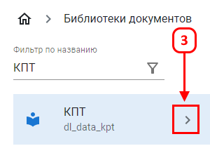
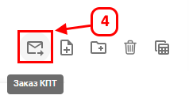
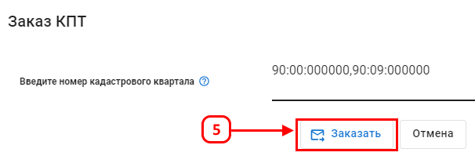

Функция «Заказ КПТ» позволяет заказать актуальный кадастровый план территории.
Для заказа КПТ необходимо перейти в раздел «Библиотеки документов» (2).
В фильтре по названию найти библиотеку «КПТ» (3).

Выбрать заказ КПТ (4).

В диалоговом окне ввести номер кадастрового квартала. Если заказывается более одного кадастровго квартала, они вписываются через запятую без пробелов.

После размещения заказа на КПТ в этой библиотеке, будет создана новая папка, куда будут автоматически загружаться ZIP-архивы из ФГИС ЕГРН.